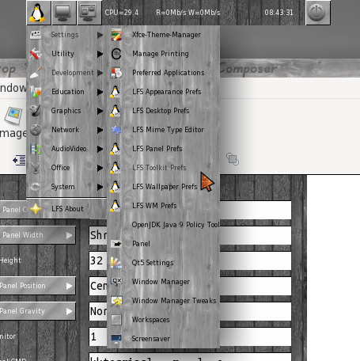

A low resource/dependency desktop for Linux From Scratch, although designed for Linux From Scratch has been tested on Slackware and XUbuntu briefly.
Please note this project is not an official part of the LFS project here:
Linux From Scratch
The project consists of a window manager, desktop, panels, and wallpaper manager, it is themeable via standard gnome/xfce icons, gtk2 themes and the window manager can use standard xfce4 themes, there are also an number of themes included for themeing the various widgets used by the main library.
Code is available on github here:
LFS Desktop Project
LFS Appearance
Toolkit Prefs ( All Hallows )
Toolkit Prefs ( Steel )

Toolkit Prefs ( Winter Wood )
Toolkit Prefs ( Oldy XMas )
Default Prefs ( No Theme )
All the window manager, icon and gtk2 themes can be found here:
Themes And Icons
Additionally the toolkit themes shown above are packaged with the library.
Panels
Multiple panels can be used and their size, position and which monitor to display them on ( on a multi head system ) is set via the panel prefs dialog.
Various builtin widgets can be set in the panels, eg clock, alsa volume etc etc and of course an applications menu and logout/shutdown/reboot menu.
Panel widgets are placed grouped either to the left or right and are selected in the prefs accordingly, a single letter defines which widgets to use ie:
A=Application menu, W=All windows, w=Only windows on current desktop, L=Logout menu, C=Clock, D=Disk activity, M=CPU data, S=Spacer, l=Launchers, s=ALSA volume.
Launchers are just normal .desktop files placed in ~/.config/LFS/launchers-PANELNAME/, the user should create the folder.,the PANELNAME is user set and added to the panel config eg lfspanel-LEFT.rc ( as above ), lfspanel-RIGHT.rc etc. As you can see from the above image, the left panel includes launchers (l) and the ALSA volume control (s).
The application menu includes items from ~/.local/share/applications as well as the global apps in /usr/share/applications.
Application Menu

Logout Menu
Global Window Menu
Windows On Current Desktop Menu
You can also add .desktop files to act as launchers.
A range of example widgets are available in the LFSDesktopProject/LFSToolKit/examples folder eg:
{kind=link}
Full API documentation is available for the lfstklib in the LFSToolKit/docs folder and can be built like with 'make docs' after doing the configure.
Desktop
A full fledged desktop is included and will display icons for disks and any items placed in the~/Desktop folder, there are also three convenience icons Home, Computer and Documents which will take you to the corresponding folder ( file manager is chosen by the xdg-open application ). Icons can be double clicked to activate or you can use a right click to pop up a context menu. Double clicking a desktop file will attempt to run the corresponding application.
Desktop prefs are set via the lfsdesktopprefs dialog.
Dual head system with separate wallpapers:
{kind=link}
Applications
A number of convenience apps are supplied like so:
lfsfontselect results are outputted on the command line.
lfsmimeeditor
lfscolourchooser results are outputted on the command line.
lfsruncommand
lfsabout
Preferences
Prefs are set via the relevant settings dialogs.
You can load a complete set of prefs via the lfsappearance dialog via the drop down menu, you can also add an new set just type a new name in the edit box and select 'Add Group' from the drop down.
The new group will be a clone of the current prefs used.
Starting a complete desktop
An example xinitrc.sample file is included in the main folder, this should be modified to your own needs and copied to ~/.xinitrc, to scripts are also installed with the LFS Applications, startlfsdesktop and lfslaunchpanels, startlfsdesktop will create a set of sensible default prefs if none exist and then start the desktop session, lfslaunchpanels will launch all the panels you have configured.